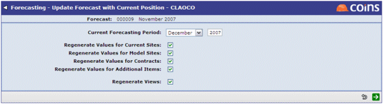
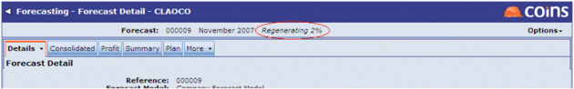
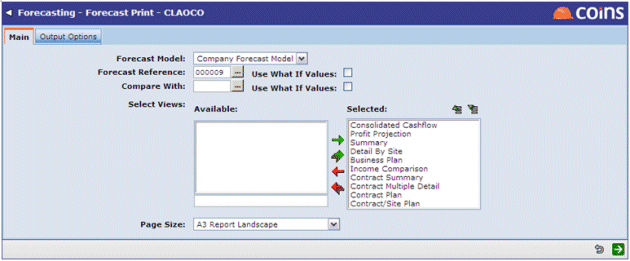

To update the forecast:
- Select Regenerate Values/Views.
The following screen will appear:

- Set the required options.
- Click
 to launch the update.
to launch the update.
This will launch a background process that updates the data in the forecast with the latest information from

To print out all or part of the forecast:
- Select Print Forecast.
The following screen will appear (along with the Output Options tab, which contains the standard

- You can choose to either produce a print out of selected views, or use the Compare With field to specify another forecast to print a comparison with.
- Use to launch the print.